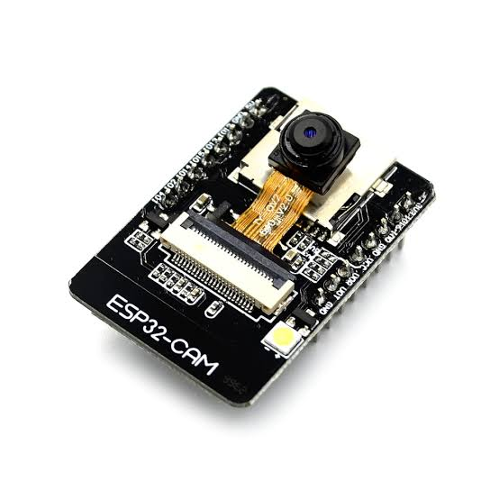
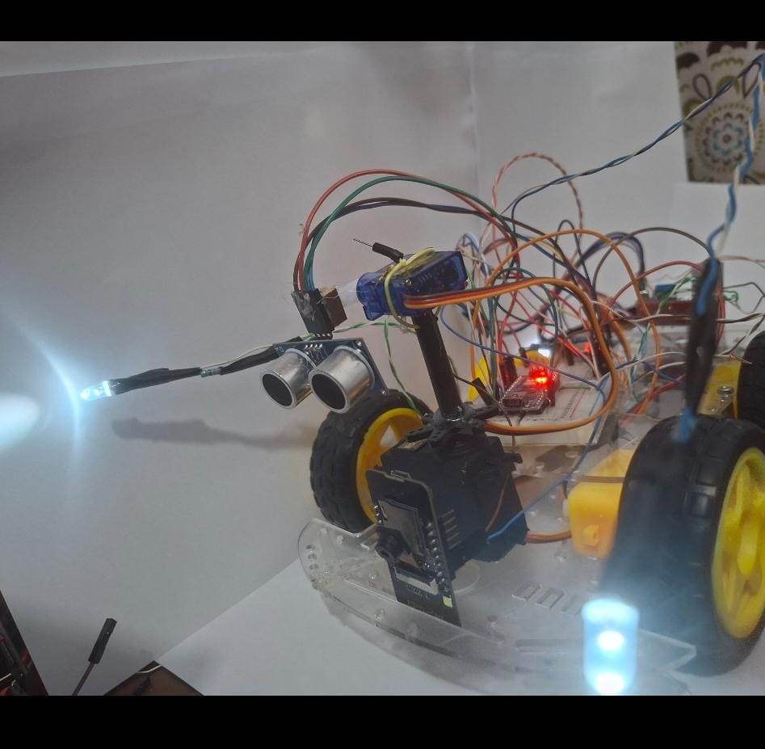
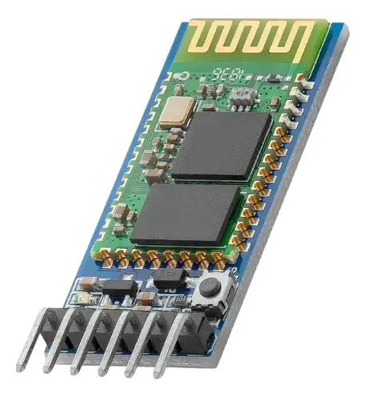
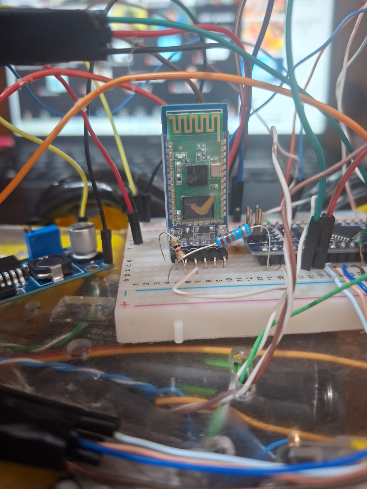
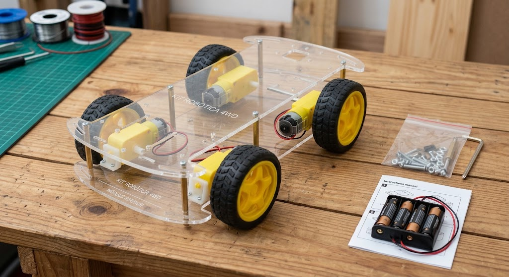
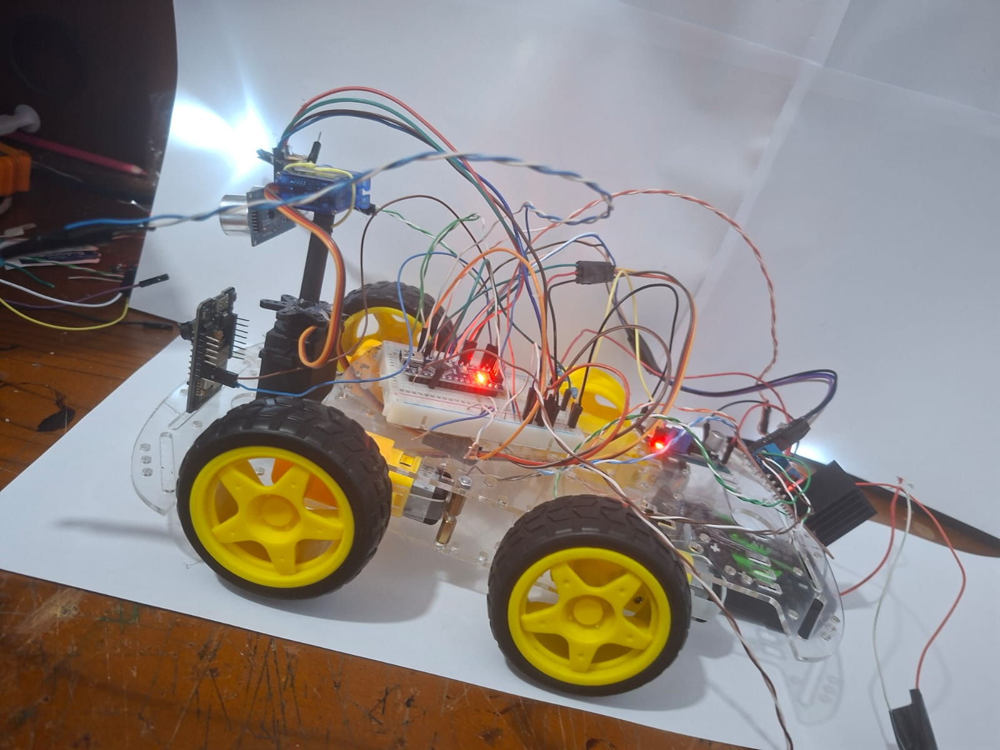
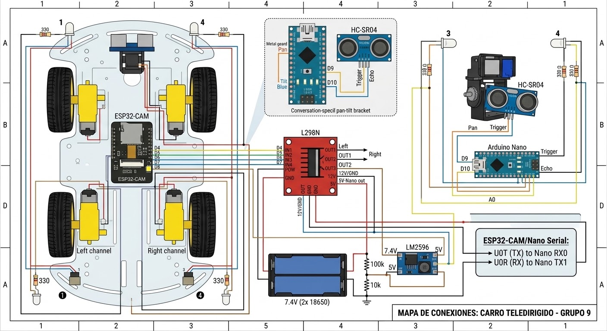

Transmisión en Vivo
Monitoreo en tiempo real para conducir el vehículo a distancia.
Grupo N°. 9: Sebastián Guaras, Jordan Ramírez
Monitoreo en tiempo real para conducir el vehículo a distancia.
Hardware principal utilizado en el diseño, procesamiento y control del proyecto:
Descripción: Se encarga de conectarse a la red Wi-Fi, transmitir el video en tiempo real.

Referencia (Google)

Foto en nuestro proyecto
Descripción: Puente H utilizado para controlar el sentido de giro y la velocidad de los motores del carro recibiendo las órdenes de las placas principales.

Referencia (Google)

Foto en nuestro proyecto
Descripción: Microcontrolador secundario encargado del trabajo pesado: mover los motores, controlar los servomotores y procesar los sensores, evitando sobrecargar la cámara.

Referencia (Google)

Foto en nuestro proyecto
Descripción: Proveen 7.4V de potencia para los motores, mientras que el módulo Step-Down LM2596 estabiliza esa energía a 5V seguros para las placas electrónicas.

Referencia (Google)

Foto en nuestro proyecto
Descripción: Permite establecer comunicación inalámbrica por Bluetooth con el Arduino. Es vital para enviar los comandos de movimiento desde un teléfono celular para conducir el vehículo en caso de no usar la red Wi-Fi.

Referencia (Google)

Foto en nuestro proyecto
En esta sección se detallan componentes complementarios de conexión y estructura utilizados para el ensamblaje.
Descripción: Pequeños componentes de seguridad para proteger los LEDs y evitar que la placa principal se queme al bajar el voltaje del sensor ultrasónico y de los pines de comunicación.
.jpg)
Referencia (Google)
1.jpg)
Foto en nuestro proyecto
Descripción: Diodos emisores de luz instalados en la parte frontal y trasera para iluminar el camino del vehículo y mejorar el diseño visual de la carrocería.

Referencia (Google)

Foto en nuestro proyecto
Descripción: El soporte base transparente donde montamos todos los componentes, impulsado por los motores con llantas de goma que brindan tracción al suelo.

Referencia (Google)

Foto en nuestro proyecto
Diagrama técnico que ilustra el cableado completo del circuito entre los microcontroladores, el puente H, sensores y alimentación.

Evidencia del proceso de programación de la página web. A continuación, se detalla la función de las líneas de código principales.
1. Estructura y DOCTYPE Esta línea define que el documento es un archivo HTML5, asegurando que el navegador interprete correctamente el código de nuestra interfaz web.

2. Head y Metadatos Configura la vista para dispositivos móviles (viewport) y el título de la pestaña, garantizando que el panel de control se adapte a cualquier pantalla.

3. Estilos Generales (CSS) Aplica el color de fondo y la tipografía a toda la página, dándole el diseño visual tipo panel de administración a nuestro proyecto.

4. Diseño del Encabezado Configura los colores corporativos, la alineación centrada y el espaciado para destacar el nombre de nuestra unidad educativa.

5. Navegación Fija (Sticky Nav) Hace que la barra del menú se quede pegada en la parte superior al hacer scroll, permitiendo al usuario cambiar de sección rápidamente.

6. Estilos de Secciones Define los márgenes y sombras de los cuadros blancos de contenido, dándoles una apariencia separada y limpia frente al fondo gris.

7. Ocultamiento (SPA) La regla 'display: none' oculta todas las secciones por defecto. Es el núcleo que permite navegar sin recargar la página entera.

8. Cajas Multimedia Estructura en CSS (Multimedia-box) que define el tamaño y borde del recuadro destinado a recibir el video de la cámara del carro.

9. Etiqueta Header (HTML) Es el bloque principal que agrupa nuestro logo, el título del proyecto y los nombres de los creadores en la parte superior de la interfaz.

10. Datos del Grupo Código que muestra los nombres específicos de los integrantes del Grupo N°. 9 (Sebastián Guaras, Jordan Ramírez).

11. Botones del Menú Etiquetas 'button' con eventos 'onclick'. Al presionarlos, ejecutan un script para cambiar la vista hacia la sección correspondiente.

12. Sección de Inicio El bloque HTML que aloja la caja multimedia. Será el destino del enlace de transmisión de video enviado por el ESP32-CAM.

13. Sección Componentes Una lista HTML utilizada para enlistar formalmente el hardware principal, como el puente H y el microcontrolador.

14. Elementos Adicionales Bloque que agrupa los complementos del circuito, mostrando cómo HTML estructura la información de forma legible para el usuario.

15. Cuadrícula (Grid) La clase CSS 'grid-capturas' que organiza automáticamente estas 20 imágenes en columnas dependiendo del tamaño de la pantalla.

16. Sección de Videos Contenedores diseñados para insertar etiquetas HTML de video, lo que permitirá reproducir las grabaciones del ensamblaje.

17. Script JS (Inicio) La función de JavaScript que busca todos los elementos con la clase 'seccion' y los oculta temporalmente al hacer clic en el menú.

18. Resaltado de Menú (JS) Lógica que borra el color verde de todos los botones del navegador para prepararlos antes de iluminar la opción seleccionada.

19. Cambio de Sección (JS) Toma el ID específico de la sección elegida y le agrega la clase 'visible' para que aparezca en pantalla, creando el efecto dinámico.

20. Cierre de Etiquetas El final del código con el cierre de las etiquetas 'body' y 'html', fundamentales para que la estructura no presente errores de lectura.

Proceso paso a paso de la construcción física y electrónica de nuestro vehículo teledirigido.
Demostración del vehículo en movimiento, pruebas de control remoto y respuesta de los sensores en pista.
Conoce a los responsables de la construcción, electrónica y programación del proyecto.
Rol: Encargado de la estructura física del carro, el ensamblaje de los componentes y las conexiones electrónicas. Responsable de la configuración de la red Wi-Fi y la vinculación del módulo ESP32-CAM para habilitar la transmisión de video.
Rol: Encargado de la programación del código base de la página, la creación de la estructura de las secciones (HTML) y la aplicación de estilos (CSS) para darle un diseño profesional a la interfaz de control.